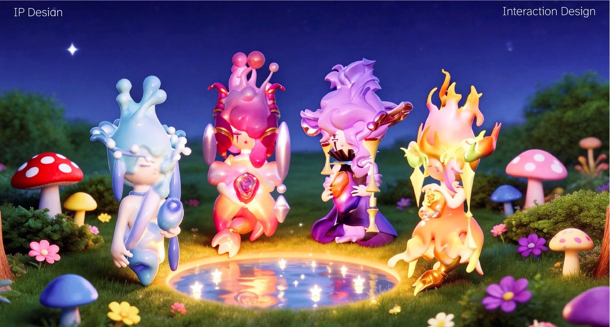

日常困扰与归属感
回避情绪问题、缺少明确兴趣。设计回应：建立容易亲近、持续可辨认的角色。
拖动旋转 · 松手后缓缓停下
幻想诺娃是一组面向年轻人的情绪陪伴精灵。项目将情绪映射为角色的色彩与形态，再通过可穿戴戒指构想，把陪伴带入日常。
毕涵昱 · 角色设计 / 3D 建模 / 交互概念
前期调研从精神寄托方式与日常困扰出发，提炼出归属感、自我理解和及时回应三个方向。
原稿记录的五类方式 · 百分比
数值来自项目原稿，不构成合计占比；原稿未附样本量、统计口径及完整出处，作为探索线索保留。
回避情绪问题、缺少明确兴趣。设计回应：建立容易亲近、持续可辨认的角色。
缺乏自信，希望获得理解。设计回应：接纳四种情绪，不以“好坏”评价用户。
缺少放松时间，期待需要时出现。设计回应：用按住唤醒缩短交互路径。
依据原稿访谈摘要整理，不能代表整体人群。
以共同的象征与精神寄托为切入点，将“神明的回应”转为易感知的精灵形象。
设计落点：符号与角色认同。从不稳定关系中的归属需求出发，让四种情绪形态保持同一角色身份。
设计落点：稳定、连续的陪伴。为难以表达的情绪提供象征对象，让用户主动决定何时开始、何时结束。
设计落点：情绪可视化与自主控制。以上为项目采用的理论视角及设计解读，不作为产品效果验证。
从静静到恹恹，色彩逐渐升温，轮廓逐渐张扬。选择角色，进入 3D 展厅。
把片刻的宁静，握在手心。
那些还没有答案的事，也可以慢慢说。
世界转得太快时，陪你慢下来。
即使心里一片混乱，你也不必独自面对。
以头发、头饰、耳饰、水晶球与尾巴为五组变量，将情绪转译为一套连续的造型语言。
平静时，水滴、珍珠与柔和曲线建立亲近感；情绪增强时，卷曲、尖角与火焰轮廓让张力变得可见。
四种形态共享精灵姿态与怀抱水晶的动作，让用户始终认出同一位陪伴者。
按住唤醒，松开可取消。完成后，精灵会回应你。
概念交互体验 · 当前情绪：静静
留一点时间，给自己。
戒指是交互入口，精灵是情绪回应。原型佩戴照片与投影情境图，共同说明设计如何融入生活。
以心跳、体温变化作为情绪映射的概念输入。
按住戒指侧面，主动发起陪伴。
对应形态的精灵出现，给予可见的回应。
伸展手指，结束投影，回到日常。
实物制作与佩戴记录见上图；生理感知与角色投影为概念设想，网页演示不采集身体数据。

每一种情绪，都值得被看见。